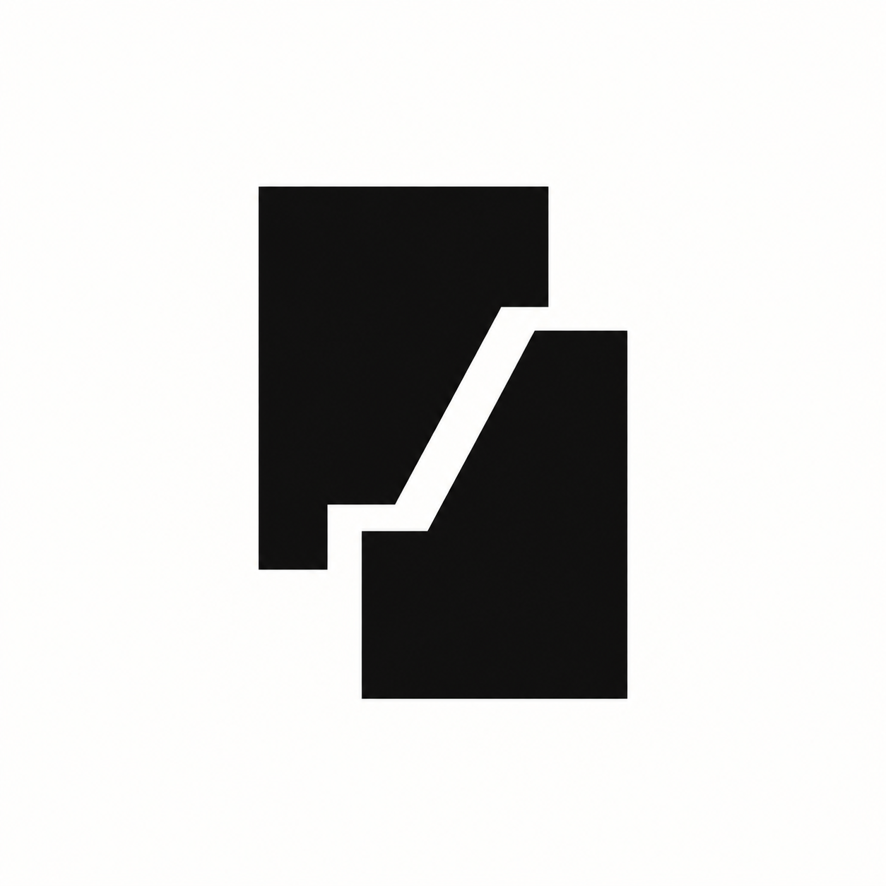
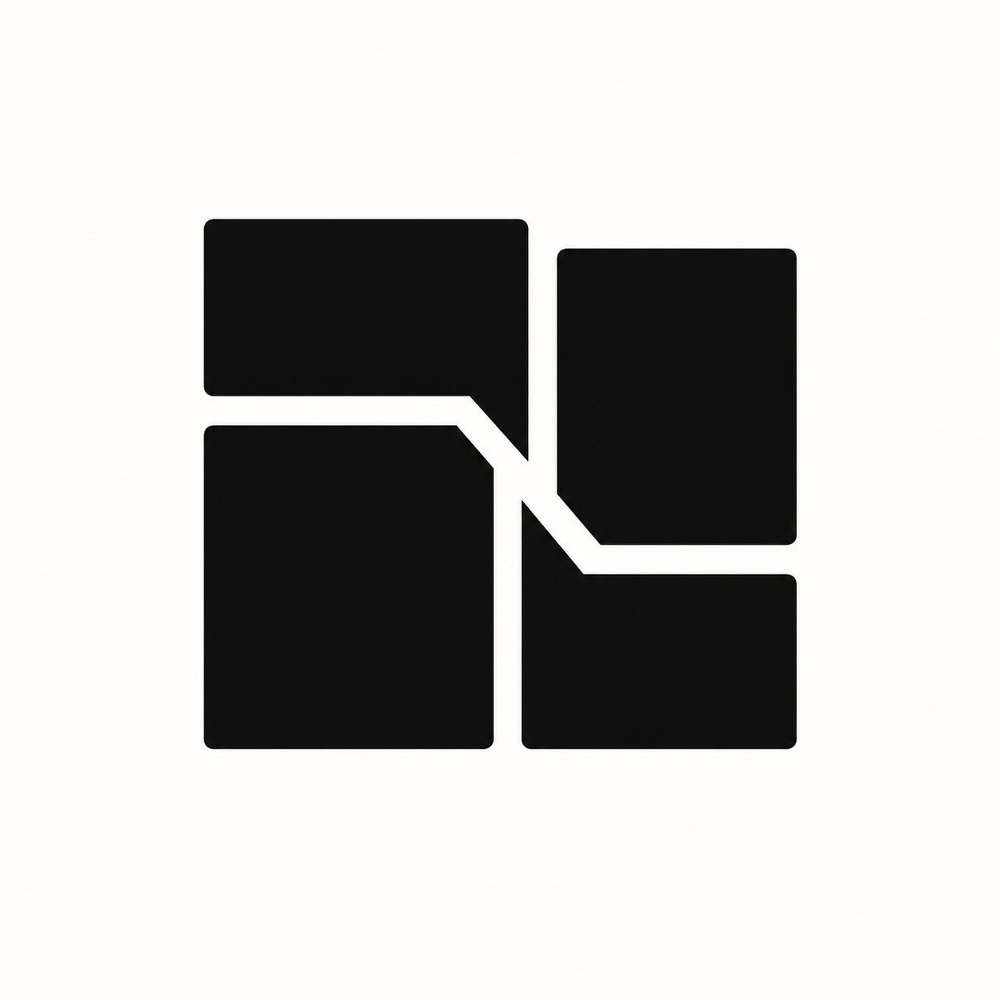
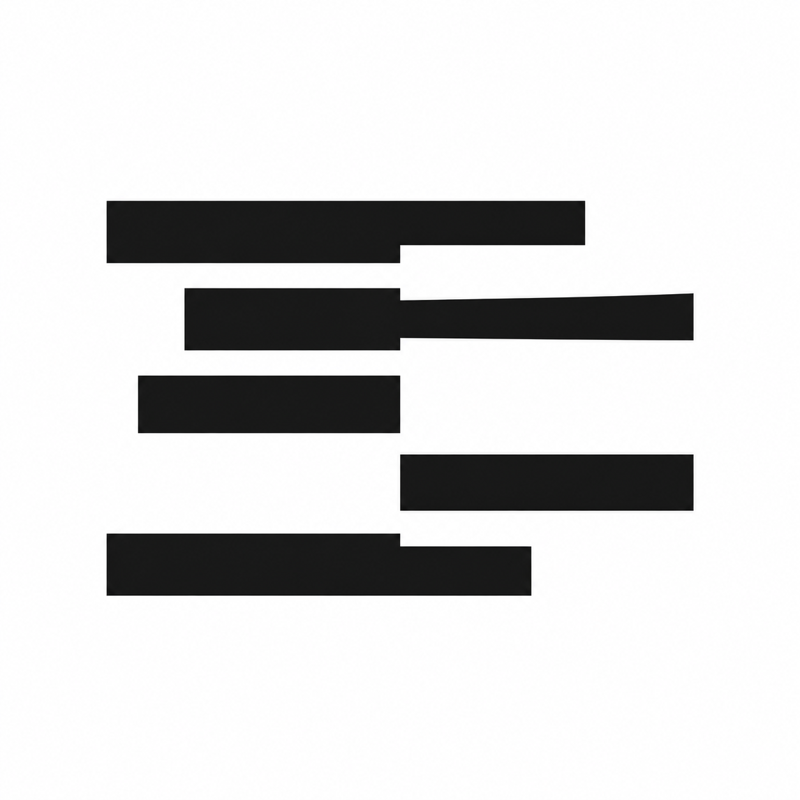

01SpliceA precise cut through two pieces of media. The simplest direction, with a seam that could open and close in motion.
02FramesA compact composition of frames. Connects to images, video and the way several media tools work together.
03RasterScan lines and sampled data. A more technical direction with a rhythm that could shift as media is processed.